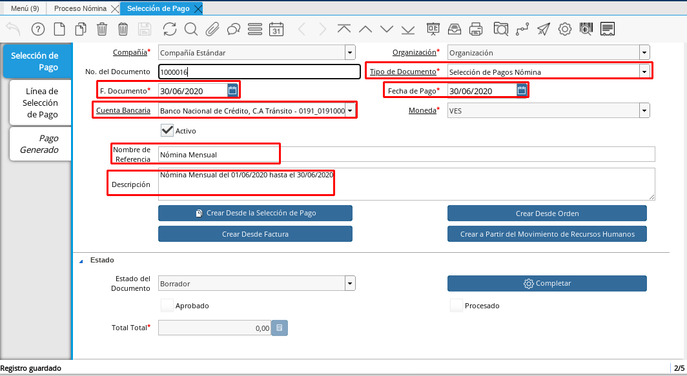

Registro desde Nómina
La selección de pagos de nómina representa una de las formas que requiere ADempiere para que usted registre el pago de la nómina a los empleados, luego de que usted completó la nómina de los empleados y está seguro de que todos los cálculos obtenidos son correctos, previa visualización en el reporte de nómina, debe comenzar el proceso donde registre los pagos de cada uno de los empleados.
Lo primero que debe hacer es dirigirse a la ventana “Selección de Pagos”, ubicada dentro de la carpeta principal del menú llamada “Gestión de Saldos Pendientes”.
Registre los datos principales del pago con la siguiente información:
Seleccione en el campo Tipo de Documento la opción “Selección de Pagos Nóminas”, el tipo de documento determina la acción a realizar del documento dentro de ADempiere.
Seleccione en el campo “Fecha del Documento” la fecha en la que está realizando el documento, se recomienda utilizar la misma fecha contable con la que registró el proceso de nómina
Seleccione en el campo “Fecha de Pago” la fecha de pago del documento. La fecha de pago determina la fecha en que se generarán los pagos dentro de ADempiere, es fundamental ya que en muchos casos esa será la fecha en la qué se generará el txt del banco, cualquier variación en la misma podría ocasionar que esté documento no sea aceptado por el mismo, se recomienda que la selección de pago se realice el mismo día en que subirá el txt al banco.
Luego debe seleccionar en el Campo “Cuenta Bancaria” la Cuenta Bancaria que se va a disponer para el pago de la nómina, en este caso será una caja y estará identificada con el Nombre del Banco y al final de este llevará la palabra Tránsito. La Cuenta Bancaria identifica la cuenta del banco de la cual se van a emitir los pagos a los empleados
En el campo “Nombre de Referencia” puede colocarle un nombre referencia qué le ayude a identificar claramente la selección de pago, por ejemplo: Selección de Pago de la Nómina Semanal
En el campo “Descripción” puede colocar también una breve descripción de la selección de pago, por ejemplo: Selección de pago de la nómina semanal del 01/06/2020 hasta el 07/06/2020

Imagen 1. Selección de Pago
Posteriormente usted debe seleccionar el campo que dice “Crear a partir del Movimiento de Recursos Humanos” este campo le indica que va a seleccionar los pagos de la nómina que desea cancelar. Inmediatamente le aparecerá una ventana con distintos filtros debido a que en ese momento puede tener diferentes procesos de nómina completos estos filtros que se detallan a continuación le ayudarán a encontrar de una manera más eficaz del proceso de nómina que se desea cancelar, entre ellos podemos seleccionar:
Imagen 2. Campo Crear a Partir de Movimiento de Movimiento de Recursos Humanos
Nómina: Seleccione el tipo de nómina que desea cancelar, esta opción le permite filtrar todos los procesos de nóminas de este tipo que estén completos
Proceso de Nómina: coloque el número del documento del proceso de nómina que se cancelará. Con estos 2 filtros encontrará exactamente la cantidad de socios de negocios que posee la nómina conjuntamente con el concepto de neto a pagar procesado a cada uno de ellos. Cabe acotar que para que usted pueda visualizar el proceso de nómina esté debe estar en estado completo
Imagen 3. Búsqueda de Nómina
Luego de seleccionar estos filtros se le desplegará una lista con la cantidad de empleados a los cuales se les procesó la nómina, conjuntamente con el nombre de los empleados estará acompañada el concepto de neto a pagar que se le calculó a cada empleado. Puede tildar cada uno de los empleados o tildar el primer recuadro que aparece antes de la lista de todos los empleados, para seleccionarlos todos automáticamente.
Presione el check de OK.
Imagen 4. Selección de Movimiento de Nómina


Diríjase a la pestaña “Línea de Selección de Pago”, en esta ventana verificaremos que estén correctamente todos los montos que le fueron asignados a cada empleado, es decir que en el concepto neto a pagar esté la cantidad correcta, además de esto usted debe verificar que se encuentren todos los empleados. Otro de los factores que debe tener en cuenta es que la regla del pago de los empleados sea Débito Directo, sí el empleado no tiene está regla de pago no serán regenerados por pagos para esté empleado, para conocer cómo determinar la regla de pago puede dirigirse al documento Pestaña Detalle de Pago en el cual se le detallan todos los pagos a seguir para configurar la regla de pago del socio de negocio empleado.
Imagen 5. Linea Selección de Pago

Seleccione nuevamente la ventana principal Selección de Pago y verifique en el campo “Total Total” aparezca el monto total de lo que usted va a cancelar en su nómina.
Imagen 6. Campo Total Total

Sí todos los datos descritos a continuación están correctos proceda a completar la selección de pago.
Imagen 7. Completar la Selección

Note
Para este ejemplo de Selección de Pago se utilizó la cuenta de la caja asociada al Banco Nacional de Crédito.